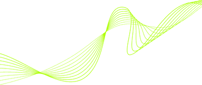

Lavras está medindo o próprio ecossistema de inovação. Se a sua startup está aqui, ela precisa aparecer nesse número.
Realização



O Observatório
O Observatório VDI é o instrumento que a Superintendência de Inovação usa para enxergar o Vale dos Ipês como ele realmente é — e não como se imagina que ele seja. O Censo Semestral pergunta a cada startup do território onde ela está, do que precisa e para onde vai. O que volta desse levantamento é a base do que a cidade decide sobre inovação.
Para que serve o dado que você entrega
Medir o peso real da tecnologia, do agrofoodtech e dos demais setores de inovação na economia de Lavras.
Formular políticas públicas de fomento a partir de números do território, não de estimativa.
Direcionar o apoio dos ambientes de inovação para a necessidade que cada startup declarou ter.
Acompanhar a maturidade do ecossistema ao longo do tempo — é por isso que o censo se repete a cada seis meses.

Vale dos Ipês é a marca do ecossistema de inovação de Lavras. O LVRS+ é o Pacto pela Inovação que o coordena, com a meta de consolidar a cidade como Capital do Futuro do Alimento.
Público
O convite vale para toda startup do ecossistema Vale dos Ipês, em qualquer estágio — da ideação à escala. Não é preciso ter faturamento, investimento ou CNPJ maduro para responder: parte do que o censo quer descobrir é exatamente quantas estão começando agora e o que falta para elas crescerem.
O que você declara como trava de crescimento é o que orienta o apoio dos ambientes de inovação do ecossistema.
O censo pergunta com quais dos 12 Projetos Prioritários do LVRS+ a sua startup pode interagir — e essa resposta vira conexão.
Mapeia quem já usa ou pretende acessar incentivo fiscal municipal e quem quer testar solução no Sandbox Regulatório.
Um ecossistema que se mede consegue se apresentar. Os relatórios agregados são o que Lavras leva para investidor, edital e imprensa.
É um diagnóstico de maturidade, não um cadastro. Ele vai da governança ao faturamento, do posicionamento global ao impacto social. Reserve o tempo e responda com calma — a qualidade do retrato depende disso.
O questionário
Cada bloco abre uma camada do negócio. Vale abrir o formulário já sabendo o que ele vai perguntar.
Nome, CNPJ ou CPF, como a startup surgiu, vertical de atuação, tecnologias empregadas, endereço, fase do negócio e redes sociais.
Até cinco sócios, com contato institucional, LinkedIn e área de atuação de cada um.
Quais habilidades-chave o time já tem, quais ainda faltam, e quais são os valores e o propósito da startup.
Tamanho do mercado total e do nicho, por que ele é relevante, que espaço existe nele, concorrentes diretos e indiretos, vantagem competitiva e fornecedores.
Perfil do cliente, qual dor a startup resolve, como essa dor foi identificada e como a solução responde a ela.
Como a startup faz dinheiro, qual é o modelo de receita e por que ele é escalável e sustentável.
Número de clientes, como eles são monitorados, funil de vendas, faturamento bruto anual e taxa de crescimento.
Caixa para os próximos doze meses, plano de captação, investidores mapeados, investimento já captado, empregos diretos mantidos em Lavras e o que mais trava o crescimento.
Uso de incentivo fiscal municipal e do Sandbox Regulatório, e com quais dos 12 Projetos Prioritários a startup pode interagir.
Privacidade e transparência
O censo pede informação estratégica, financeira e corporativa — e por isso a regra do que acontece com ela precisa estar escrita antes da primeira pergunta, não depois.
Informações estratégicas, financeiras e corporativas da startup são protegidas por sigilo.
O tratamento tem finalidade exclusiva de executar o planejamento estratégico das políticas públicas do ecossistema de inovação.
Dados pessoais — contatos e endereços residenciais — não são publicados em documentos de acesso público.
Relatórios macroeconômicos e de diagnóstico são divulgados pelo Município unicamente com os dados de forma agregada e anonimizada.
Base legal
Lei Geral de Proteção de Dados — Lei Federal nº 13.709/2018
Orientação Administrativa Municipal nº 001/2026/CTTC